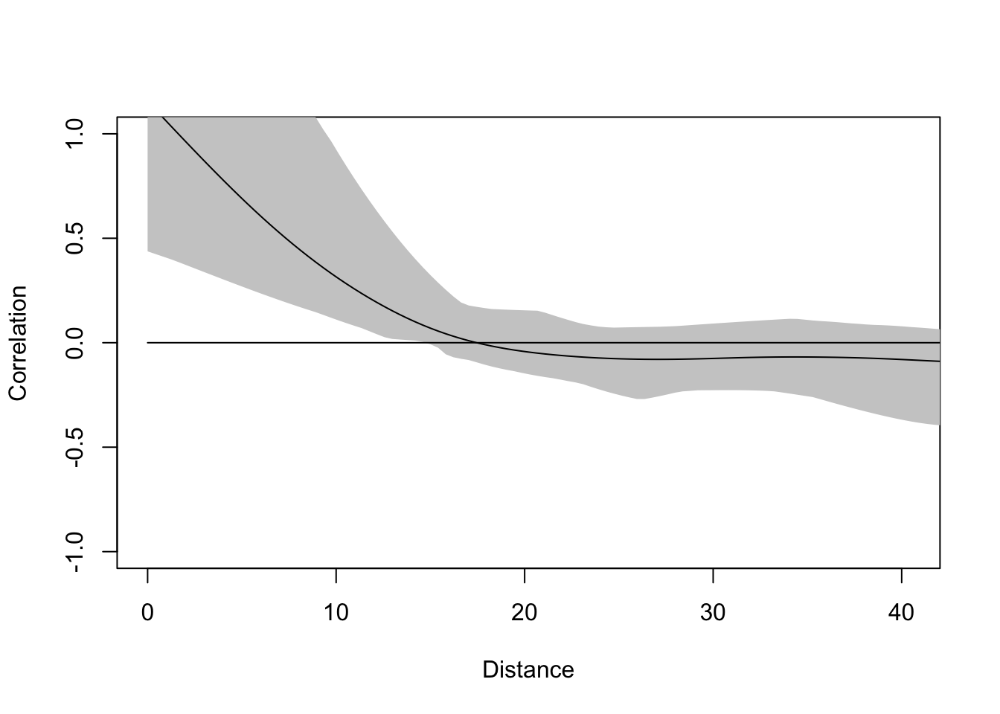
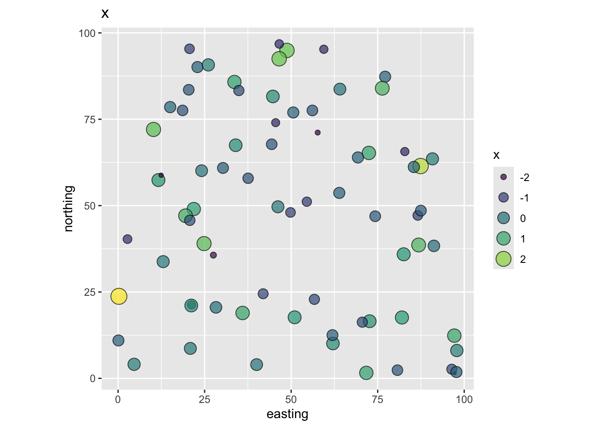
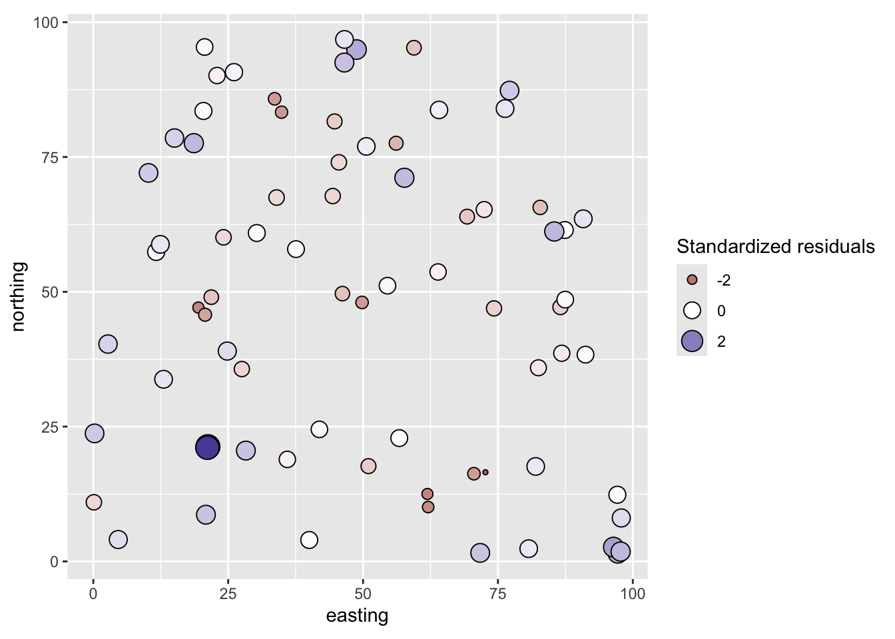
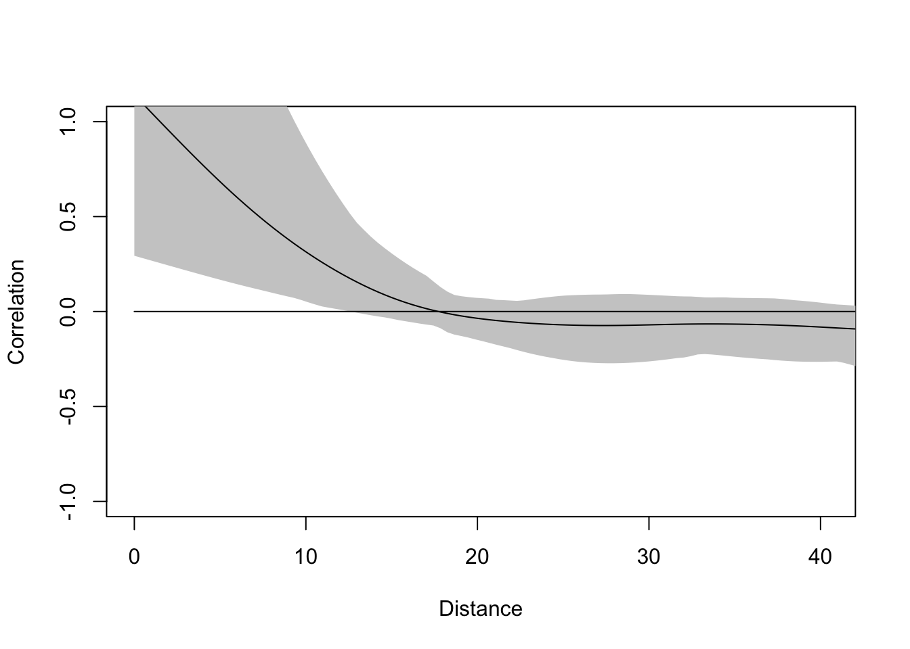
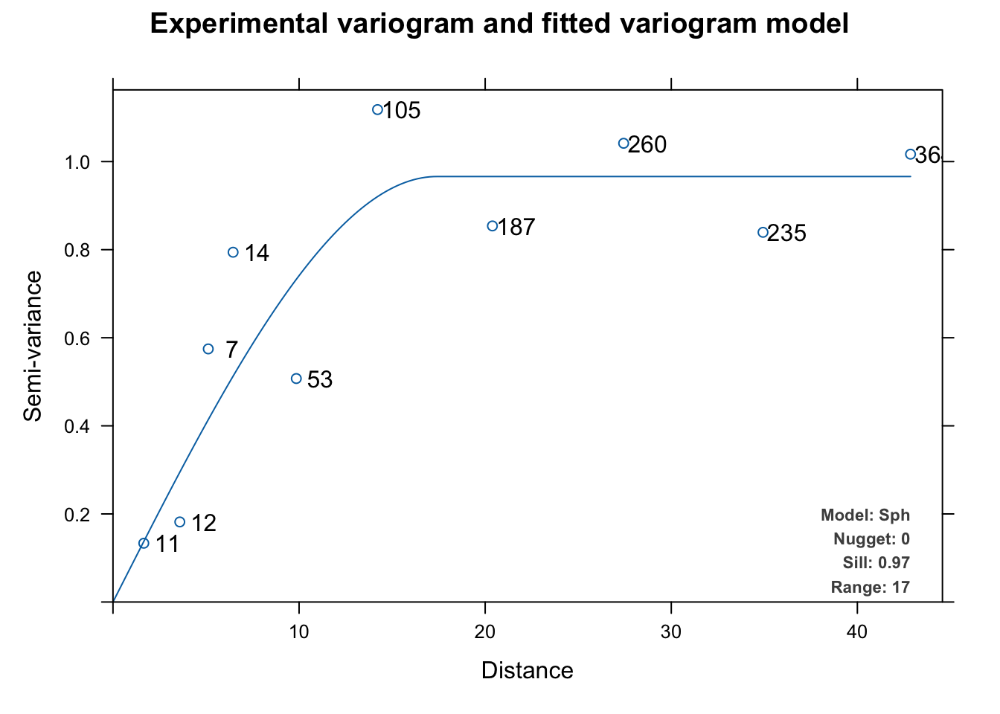
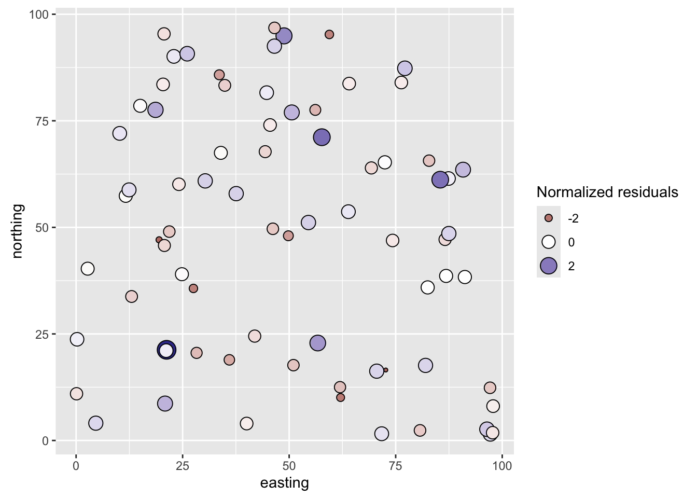
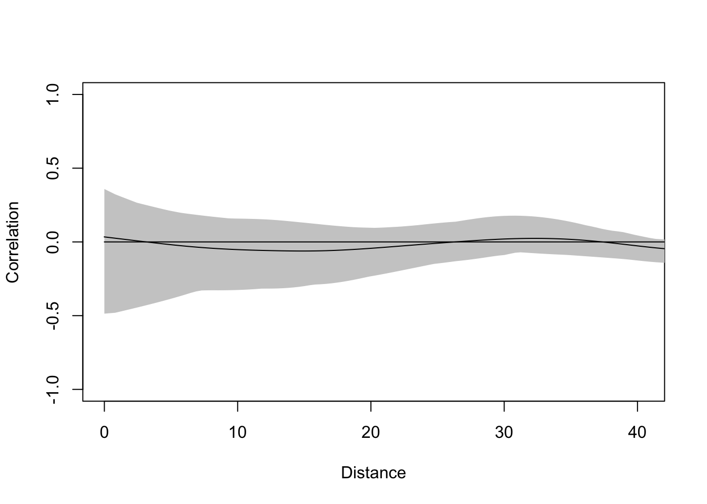

Code
library(automap)
library(gstat)
library(nlme)
library(spdep)
library(ncf)
library(tidyverse)We flagged in the regression kriging module that spatially autocorrelated residuals from an OLS model are a problem. This is the module where we deal with that problem. It is also where we shift goals. Most of what we have done in this class has been interpolation: estimating values at unmeasured locations, with the prediction surface as the end product. Here we are doing something different. We want to understand the relationship between variables, estimate a coefficient that tells us how much \(y\) changes with \(x\), and test whether that relationship is distinguishable from noise. Any predictions are a byproduct; the coefficients and their uncertainty are the point.
Standard OLS regression assumes that the errors are independent. With spatial data, that assumption is commonly violated: nearby observations tend to share unmeasured spatial structure, which means their residuals are correlated rather than independent. When that happens, OLS coefficient estimates can be inefficient and their standard errors can be wrong, leading to overconfident inference. Generalized least squares (GLS) lets us explicitly model the spatial structure of the residuals and account for it, giving us better parameter estimates and valid hypothesis tests.
Dormann et al. (2007) provide a review of several methods for accounting for spatial structure in species distribution data. The paper does a good job of explaining the big picture on why space is important in a regression context. Much of the paper uses matrix notation that you might not be familiar with and the mathematical details are not critical. In this module, we will focus on using generalized least squares (GLS). For this paper, I suggest reading the intro and then skimming the rest. Pay attention to the first part of section three on spatial models based on GLS regression but don’t sweat the details more than you want to.
Keitt et al. (2002) is also worth a heavy skim. They don’t use GLS in their approach but do show how spatial methods outperform standard methods in a few case studies. Focus on the implications rather than the methods in that paper. I worked with Tim Keitt when I was a masters student and my goodness, he is a smarty pants. It’s worth reading anything he’s written.
You’ll want to install the packages below. We are going to fit a linear model using GLS as opposed to ordinary least squares and thus need nlme(Pinheiro et al. 2025) as well as some of our other spatial standards: gstat(Pebesma and Graeler 2026), spdep(Bivand 2026), ncf(Bjornstad 2026), and automap(Hiemstra et al. 2008). As always, tidyverse(Wickham 2023) for data wrangling.
A very common situation with environmental data is to want to do an ordinary least squares (OLS) regression using spatial data. If your data are explicitly spatial, you are doing spatial regression, and that has different pitfalls than standard regression. And the pitfalls matter here more than they did in the interpolation modules, because we care about getting the coefficients right. When we were kriging, a biased variance surface was a problem but the prediction surface might still have been useful. When we are trying to make inference about whether nitrogen drives tree growth, a coefficient with a wrong standard error and an inflated t-statistic is the whole problem.
The biggest issue is that if the residuals are autocorrelated, you have violated the assumption of independence. When that happens, the standard errors on the coefficient estimates tend to be underestimated, and the t-scores overestimated, when autocorrelation of the errors at short distances is positive. Any statistical inference could therefore be wrong: the p-values from a t-test will be artificially low. But despair not. If we take the spatial structure of the errors into account we can usually still model the association between \(x\) and \(y\) effectively.
Is this a little opaque? Let’s make up an example. Say you want to build a model of tree growth as a function of plant-available nitrogen in the soil. Your idea is that trees with more nitrogen will grow better. You make a nice linear model \(y=\beta_0 + \beta_1 x + \epsilon\) where \(y\) is the basal area increment of the tree, \(\beta_0\) is the intercept, \(\beta_1\) is the coefficient on \(x\) (plant-available N), and \(\epsilon\) is the residual. You have a gorgeous dataset with 75 mapped trees, making this a spatial regression: \(y_i=\beta_0 + \beta_1 x_i + \epsilon_i\) where \(i\) is the location specified by northing and easting coordinates.
You run an OLS regression, get a positive slope, and a t-test says your model has skill (good \(R^2\), \(p<0.05\)). Great. You fire off a letter to Nature, or write your thesis, or go dump some salmon carcasses on the trees, or just bathe in the satisfaction of a job well done.
But your model won’t fit perfectly, so you have residuals (\(\epsilon\)). If those residuals are not independent and identically distributed (iid), you have violated the assumptions of OLS regression. The coefficients might be inefficiently estimated, the standard errors might be wrong, and the p-values might be inflated. Alas. The classic reason that residuals are not iid in spatial data is that they are not independent, which means autocorrelation.
In general, here is a good approach when dealing with spatial data in a regression.
Start by assuming iid (e.g., doing an ordinary least squares regression).
Plot a correlogram of the OLS residuals with a bootstrap confidence envelope. This is the go/no-go decision: if the correlogram stays inside the envelope, the residuals are consistent with independence and you can stop here – OLS is fine. Note that it’s OK for \(y\) or \(x\) to be autocorrelated; what matters is the residuals.
If the correlogram pops above the envelope at short distances, fit a variogram to the residuals. The correlogram tells you that autocorrelation exists; the variogram tells you what its structure looks like – the range, the sill, the nugget. You need that to specify the correlation structure for GLS.
Fit a GLS model with a spatial correlation structure based on the variogram model.
That four-step workflow makes GLS sound straightforward in outline. It helps to understand why GLS fixes what OLS gets wrong.
We have all been taught OLS. OLS is a method for estimating the unknown parameters in a linear regression model, e.g., the intercept (\(\beta_0\)) and slope (\(\beta_1\)) of \(y = \beta_0 + \beta_1 x\). It works by finding the values that minimize the sum of squared errors. When the assumptions are met (errors are independent, equal variance, normal) the OLS estimators are optimal, often called BLUE: Best Linear Unbiased Estimators. OLS has a nice property that it can be taught without matrix algebra and connects naturally to ideas like correlation that most of us learn first in intro stats.
Here is the problem with autocorrelated errors. OLS treats every observation as carrying the same amount of independent information. But when errors are spatially autocorrelated, nearby observations share information: they are not fully independent. A positive residual at one location is likely to be accompanied by positive residuals nearby, not because of anything \(x\) is doing, but because of unmeasured spatial structure in the system. OLS ignores this and effectively overcounts the information in the data. The practical consequence is that standard errors on the coefficient estimates tend to be underestimated when residuals are positively autocorrelated at short distances, which means t-statistics get inflated and p-values get too small. The coefficients themselves (\(\hat\beta_0\), \(\hat\beta_1\)) may still be unbiased, but they are inefficiently estimated and any inference from the standard errors is suspect.
Generalized least squares (GLS) fixes this by explicitly accounting for the correlation structure of the errors. Instead of weighting each observation equally, GLS down-weights observations that are strongly correlated with their neighbors, because those observations are carrying less new information than they would if they were independent. In practice, this means we need to tell GLS what the correlation structure looks like, which is why we fit a variogram to the residuals first and pass that in. If the errors turn out to be independent, GLS simplifies and gives the same answer as OLS. OLS is a special case of GLS. The OLS via Algebra and Matrices aside works through the matrix algebra if you want to see exactly how that works.
The practical upshot follows the KISS principle: use OLS when its assumptions are met, try GLS when they are not.
Here is our goal: We will create a variable y that is a function of x but will have spatially autocorrelated noise (\(\epsilon\)). We will regress y on x and find to our horror that the residuals from this model are not iid. We will then apply a GLS model with an appropriate correlation structure and feel good about ourselves.
First, I’m going to make some autocorrelated noise \(\epsilon\). This bit of code is not for the faint of heart. You can hum your way through it and know that at the end the variable \(\epsilon\) will be spatially autocorrelated. If you want to follow along: we are making a variable \(\epsilon\) that has spatial autocorrelation \(\rho\) in the form \(\epsilon = \rho W + e\) where \(W\) is a weights matrix following an inverse distance weights process and \(e\) is random noise (\(N(0,1)\)). We make n random points following complete spatial randomness (using runif) and then do some calculations to determine how each point is linked to others based on their distances (dnearneigh and nbdists). Based on the distances we make a weights matrix following IDW with power p. We get the spatial autocorrelation generating operator for \(\rho\) via the weights matrix and then multiply by some white noise (rnorm) to get \(\epsilon\). The details on this last step involve some matrix inversions that we don’t need to unpack.
# We will do n points
n <- 75
# CSR. Our mapped points.
easting <- runif(n,0,100)
northing <- runif(n,0,100)
points <- cbind(easting,northing)
# Generate the spatially autocorrelated error term, epsilon.
# Build neighbor objects with an inclusive distance threshold
dnb <- dnearneigh(x = points, d1 = 0, d2 = 150)
dsts <- nbdists(nb = dnb, coords = points)
# And follow an IDW process
p <- 2.25 # IDW power
idw <- lapply(dsts, function(x) x^-p)
# Weights matrix as a list
wList <- nb2listw(neighbours = dnb, glist=idw, style="W")
# Compute SAR generating operator via a weights matrix
inv <- spatialreg::invIrW(x = wList, rho = 0.75)
# Calculate epsilon and rescale as z scores
epsilon <- inv %*% rnorm(n)
epsilon <- scale(epsilon[,1])[,1]OK, by great magic we now have a variable that is from random spatial points but has spatially autocorrelated values (that follow an IDW process). If you want, you can imagine that \(\epsilon\) is a variable in nature that is spatially autocorrelated that we didn’t measure (e.g., maybe soil moisture availability following the tree example above). How intense is the spatial autocorrelation?

We are going to use \(\epsilon\) as the error term in a model. I’ll use the terms “errors” and “residuals” interchangeably throughout these notes.
We’ll now make x and then \(y=\beta_0 + \beta_1(x) + \epsilon\). We will run a linear model and look at the residuals with a correlogram.
So in our thought experiment here are the data. The independent variable x:

And the dependent variable y:
Following our imagined example above we have a dependent variable y (tree growth) that we want to model using an independent variable x (nitrogen). The points (trees) are mapped using coordinates (easting and northing) and we can imagine those are in meters. Because we made up these data we know that the residual term on this model is autocorrelated noise (epsilon). If you don’t like having the errors be something theoretical in your head, you can imagine that this term is mostly some variable we haven’t measured that might provide explanatory power (e.g., a topographic variable relating to soil moisture availability).
We will start by assuming epsilon follows an iid process (e.g., \(N(0,1)\)) and we will fit a model with uncorrelated errors. Here we use gls but this gives the same result as lm would because gls assumes iid errors unless told otherwise.
Generalized least squares fit by REML
Model: y ~ x
Data: dat
AIC BIC logLik
222.5882 229.4596 -108.2941
Coefficients:
Value Std.Error t-value p-value
(Intercept) 2.9975714 0.1162332 25.789281 0e+00
x 0.4484486 0.1166894 3.843095 3e-04
Correlation:
(Intr)
x 0.047
Standardized residuals:
Min Q1 Med Q3 Max
-2.32963593 -0.58529979 -0.01674727 0.51484218 3.76954700
Residual standard error: 1.005483
Degrees of freedom: 75 total; 73 residualWe fit a linear model of the form \(y=\beta_0 + \beta_1x\) using GLS and got estimates for the intercept (\(\hat\beta_0\)) and slope (\(\hat\beta_1\)). We assumed that the error term was uncorrelated. Looking at summary, we can see the estimate of the slope (\(\hat\beta_1\)) is 0.448 and significantly different from zero. The important thing to wrap your head around here is that we just fit GLS with uncorrelated errors, meaning it’s essentially identical to OLS. Compare the above to the more familiar summary(lm(y~x,data=dat)).
Since these data are spatial, the key for us is to look at the residuals and see if they are autocorrelated. Let’s map them first.

From the map, the residuals look aggressively non-random. Positive values are near positive values and negative ones near negative values. Let’s quantify that with a correlogram.

The correlogram shows clear positive autocorrelation at short distances and the line pops well above the bootstrap envelope. That’s the go/no-go: the envelope tells us this is not consistent with independent residuals, so we proceed to characterize the structure with a variogram and fit a GLS model. If the correlogram had stayed inside the envelope, we would stop here and use OLS.
We need to determine an appropriate theoretical model for the spatial structure of the residuals and pass that to gls. Before we do, it is worth thinking about what happens under the hood. GLS builds a variance-covariance matrix \(\Sigma\) for the residuals, where each off-diagonal entry \(\Sigma_{ij}\) is a function of the distance between locations \(i\) and \(j\) – with the functional form coming from the correlation structure you specify. Then it estimates both the regression coefficients and the correlation parameters (the range, nugget, and partial sill) together by maximizing the likelihood. The estimator is \(\hat\beta = (X^T \Sigma^{-1} X)^{-1} X^T \Sigma^{-1} y\), which you can compare to the OLS version \((X^T X)^{-1} X^T y\): OLS weights every observation equally, GLS weights by the inverse of the covariance structure. The default method in gls is REML, which gives better estimates of the variance parameters than plain ML, at the cost of not being able to compare models with different fixed effects via likelihood ratio tests. You generally want REML for estimation and ML if you need to compare fixed effects with anova.
In nlme, correlation structures are represented by a family of objects that all inherit from a parent class called corStruct.
Both ML (maximum likelihood) and REML (restricted maximum likelihood) estimate model parameters by maximizing a likelihood function, but they differ in what that function is.
ML maximizes the likelihood of the data given all the parameters at once – including both the fixed effects (\(\beta\)) and the variance parameters (range, sill, nugget). The problem is that this treats the fixed effects as known when estimating the variance, which causes the variance estimates to be systematically too small, in the same way that dividing by \(n\) rather than \(n-1\) when computing a sample variance gives a biased result.
REML corrects for this by maximizing a likelihood that has been transformed to remove the fixed effects first. This gives unbiased estimates of the variance parameters. The cost is that the REML likelihood depends on the fixed effects structure, so you cannot use a likelihood ratio test to compare two REML models with different fixed effects – the likelihoods are not comparable in that case.
The practical rule: use REML (the default in gls) for your final model and for comparing models with different covariance structures. Switch to method="ML" only if you need to compare models with different fixed effects using anova.
Think of corStruct as the generic container: it tells gls “here is the shape of the correlation among the residuals.” The spatial flavor of this is corSpatial, which takes a form argument specifying your coordinate columns, a nugget flag, and a type argument for the model family. When you write corSpatial(form=~easting+northing, nugget=TRUE, type="spherical") you are building one of these objects. There are also convenience wrappers corSpher, corGaus, and corExp that are just shorthand for corSpatial with a fixed type. The reason the class hierarchy is worth knowing is that gls accepts any corStruct in its correlation argument, not just spatial ones – corAR1 for time series autocorrelation works the same way, for instance.
The families available in gls roughly match the theoretical variogram models we used with kriging: spherical, exponential, Gaussian, and so on. So, let’s fit a variogram to the residuals and see which model fits best.
Here we’ll cheat a little and use autofitVariogram to get a model suggestion rather than go through the fitting process by hand with variogram, vgm, and fit.variogram from gstat.

Look at which theoretical model autofitVariogram chose. Here is a frustrating mismatch worth knowing about. gstat can fit a lot of variogram models: spherical, exponential, Gaussian, Matern, Stein’s Matern, power, and several others. corSpatial supports only five: "spherical", "exponential", "gaussian", "linear", and "rational". No Matern. In practice, the linear model is rarely appropriate for spatial residuals, so you are really working with three sensible options. If autofitVariogram returns a Matern (model code Ste or Mat), you cannot plug that directly into corSpatial. Your options are to re-run autofitVariogram restricting the candidate models to c("Gau","Sph","Exp") – which is what we did above – or to look at the empirical variogram and make a judgment call about which of the three available families it most resembles. This is not ideal but it is the reality of working across two packages with different design philosophies.
We’ll use the chosen model family as the type argument to corSpatial below. One important thing to understand: we are not passing the variogram parameter estimates (the range, nugget, sill) into corSpatial. The type argument just specifies the functional form of the correlation structure. The actual parameter values are estimated by gls itself during model fitting. The variogram step tells us what shape to use; gls figures out the scale.
Generalized least squares fit by REML
Model: y ~ x
Data: dat
AIC BIC logLik
200.7959 212.2482 -95.39797
Correlation Structure: Spherical spatial correlation
Formula: ~easting + northing
Parameter estimate(s):
range nugget
73.79743593 0.05966924
Coefficients:
Value Std.Error t-value p-value
(Intercept) 3.224437 0.6487509 4.970224 0
x 0.451652 0.0735661 6.139411 0
Correlation:
(Intr)
x 0.023
Standardized residuals:
Min Q1 Med Q3 Max
-1.6299811 -0.5144561 -0.1530729 0.1825200 2.2617019
Residual standard error: 1.577497
Degrees of freedom: 75 total; 73 residualWe can then use update to re-fit the model with the new correlation structure. Note that this is the same as fitting a new model via gls(model = y~x, data = dat, correlation = csSpatial) but update is a cleaner way of making sure the model specification stays identical for the sake of comparison.
A word of warning before you get too comfortable. The optimizer that gls uses to estimate the correlation parameters can fail, or can produce results that look wrong. Common symptoms are a convergence warning, NA values in the summary output, or a log-likelihood that is worse than the naive model. This tends to happen when the correlation structure you specified doesn’t fit the data well, when the nugget-to-sill ratio is close to zero or one (making the model nearly unidentifiable), or just when the likelihood surface is sufficiently flat that the optimizer wanders. If this happens, try a few things: switch to a different model family, try nugget=FALSE to simplify the model, or fit the model with method="ML" temporarily to check whether the REML surface is the culprit. It is also worth inspecting Variogram(glsUpdated) from nlme after a fit: this plots the theoretical correlation function from the fitted model against the empirical variogram of the normalized residuals, and is a good diagnostic for whether the optimizer landed somewhere sensible.
This is interesting. We will interpret more below but note that the slope coefficient is different from glsNaive to glsUpdated. Let’s look at the spatial structure of the residuals from glsUpdated.
# add the residuals to the spatial dat object
dat$glsResids <- residuals(glsUpdated,type="normalized")
# Map the residuals from gls
ggplot(data = dat, mapping = aes(x=easting,y=northing,
size=glsResids, fill=glsResids)) +
geom_point(shape=21) +
scale_fill_gradient2() +
guides(fill=guide_legend(), size = guide_legend()) +
coord_fixed()
They don’t look to be autocorrelated. But we should test them:

And the correlogram shows that they are clean – autocorrelation has been accounted for.
So what’s the big deal? We started with a model that showed x as a significant predictor of y. We ended up, after much wailing and rending of garments, with a model that showed x as a significant predictor of y. Is it a better model? Was it worth the trouble? Let’s consider a few things.
The GLS model with the correlated residuals has a lower AIC than the naive uncorrelated model (201 vs. 223). AIC penalizes model complexity, so a lower AIC means the GLS model is explaining more of the variance in y without just adding parameters to do it. It is a better fit, not just a more complicated one.
The original function we used to make \(y\) was \(y=\beta_0 + \beta_1x + \epsilon\) where \(\beta_0\) = 3 and \(\beta_1\) = 0.5. Both GLS models got the intercept right (3.22 for glsUpdated and 3 for glsNaive). But the GLS model with the correlated residuals does a better job of recovering the true slope (0.45 vs 0.45).
You might notice that the naive slope (0.45) is further from the truth (0.5) than the GLS slope (0.45). Earlier we said OLS is unbiased even with autocorrelated errors – so why did the coefficient move? Unbiased means that if you ran this simulation thousands of times, the average OLS estimate would center on 0.5. GLS would also center on 0.5, but with less spread around it. That’s what inefficiency means: not a systematic pull away from the truth, but more variability from sample to sample. In this particular random draw, OLS overshot and GLS happened to land closer. In a different draw it could go the other way. The advantage of GLS is not that it always wins in any single sample, but that its estimates are less variable across samples and, crucially, its standard errors are actually valid.
The scenario where OLS can be truly biased (not just inefficient) is worth flagging: if \(x\) is correlated with the spatial structure of \(\epsilon\), meaning an important spatially-structured variable was omitted from the model. In that case the spatial autocorrelation in the residuals is partly confounded with the effect of \(x\) and OLS will systematically misestimate the slope. In our simulation \(x\) is purely random noise with no spatial structure, so this doesn’t apply. But in real data, where your predictor often covaries with geography, it can.
Finally, we did it right, and that should be satisfying. What would have happened if \(\beta_1\) had been smaller? That is, what if \(y\) was made up of more noise and less \(x\)? E.g., \(y=\beta_0 + 0.5(\beta_1)x + 2(\epsilon)\)? This model, with 75 points, should be pretty robust on the simple hypothesis test on the slope (H\(_1\): \(\beta_1 \neq 0\)) but we know that parameter estimation is inefficient with autocorrelated residuals, so having clean residuals and good parameter estimation is important.
The joy of simulated data is, of course, that we know the real answer going in. We knew that \(y=\beta_0 + \beta_1x + \epsilon\) and we knew that the residual term was spatially autocorrelated. Obviously, that’s a luxury we don’t have when making inference about data we collect.
The file birdDiv.csv has data on bird diversity and plant community diversity and coordinates for 64, 1-ha plots across the Colorado Plateau and Mogollon Rim region of northern Arizona (roughly Flagstaff east to the New Mexico border). The coordinates are UTM Zone 12N, most likely NAD83 (EPSG:26912), and are in meters.
A note on the diversity values: they are non-integer and range from 3.16 to 12.95 for birds and 3.70 to 8.14 for plants. These are not raw species counts. They are likely a diversity index – Shannon, Fisher’s alpha, or similar – but the original source and exact units have been lost. Higher values indicate greater diversity in both cases, and the relative patterns across plots are interpretable even if the absolute values are not.
This dataset is a good reminder to document your data sources carefully and immediately. The coordinates, spatial extent, plot size, and biological variables here are all internally consistent and ecologically plausible, but the original source has been lost, making it impossible to properly cite, verify the methods, or understand the diversity metric. This happens more easily than you might think: a dataset downloaded for a class exercise, renamed, reformatted, and re-used a few years later can quickly become an orphan with no traceable origin. Get in the habit of keeping a README alongside any dataset you download, noting the source, date accessed, and any transformations you applied.
Your work is to model bird diversity as a function of plant diversity with the expectation that higher plant diversity is associated with higher bird diversity. Watch those residuals and interpret carefully!